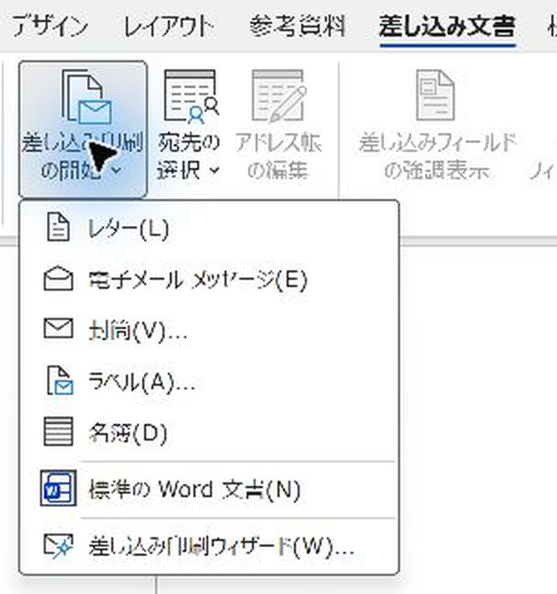
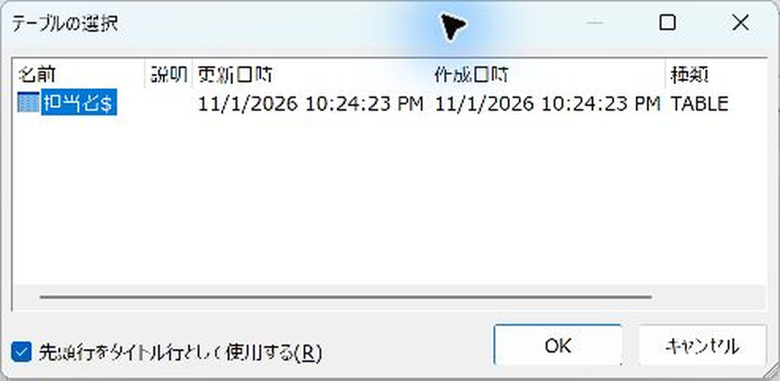
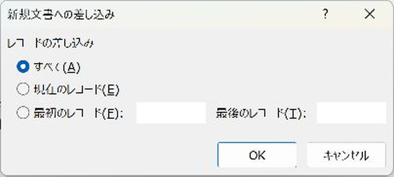

Wordの名簿差し込みを完成させる手順：レターとの違いと全員分の出力
1人分のひな形から、全員が続けて並ぶ一覧を完成させます。
「名簿」を選んでプレビューしただけでは、全員分の一覧はできません。「完了と差し込み」→「個々のドキュメントの編集」→「すべて」まで進めると、全員が並んだ新しい文書ができます。
入門（Lv.1）
- 名簿を接続
- 1人分だけ配置
- プレビュー
- 一覧を完成
目次
「名簿」を選んでも、まだ全員分の一覧はできていません
「差し込み印刷の開始」で「名簿」を選ぶのは、出力の並び方を決める操作です。「結果のプレビュー」で見えるのは、ひな形に1人分の値を当てはめた状態です。
「差し込み文書」→「完了と差し込み」→「個々のドキュメントの編集」→「すべて」→「OK」。ここまで進めると、対象者が続けて並んだ新しいWord文書が開きます。
この記事はフィールドコードを編集せず、メニューからの挿入と画面操作だけで進めます。
作業前に：1人分と全員分を区別します
Excelには6名、Wordのひな形には1名分の行を作る例です。1人分の行を6回コピーしてから差し込む必要はありません。
- 一覧に入れたい列名を決め、Excelを保存します。
- 表形式にする場合は、本文に見出しのない1行だけの表を作り、その行へフィールドを挿入します。
- 一度だけ入れたい資料タイトル・説明文は、完成文書へ出した後に加えると繰り返しを避けられます。
- 全員分を出したら、元の6名と完成文書の6名を照合します。抽出した場合は抽出後の人数と照合します。
レターと名簿：違うのは完成後の並び方
| 見るところ | レター | 名簿 |
|---|---|---|
| 作るひな形 | 1人分の案内文 | 1人分の行・ブロック |
| 結果のプレビュー | ひな形で表示中の1人を確認 | ひな形で表示中の1人を確認。まだ6人の一覧にはならない |
| 新しい文書を作る | どちらも「完了と差し込み」→「個々のドキュメントの編集」→「すべて」→「OK」 | |
| 完成後 | 1人分ずつページを分ける。1ページのひな形なら6人で6ページ | 1人分を続けて並べる。この例は6名で1ページ |
| 向いている用途 | 1人ずつ渡す通知書・案内状 | 参加者一覧・担当者一覧 |
「個々の」という名前でも、1人しか出力できないという意味ではありません。「すべて」を選べば、対象者全員の結果が1つの新しい文書になります。名簿は、人数や文量が多ければ2ページ目以降へ流れます。
種類全体の比較はレターと名簿の違いと使い分けも参照できます。
手順1「名簿」を選び、Excelの名簿をつなぐ
- Wordで白紙の文書を作ります。
- 「差し込み文書」→「差し込み印刷の開始」→「名簿」を選びます。
- 「宛先の選択」→「既存のリストを使用」でExcelファイルを開きます。
- 「テーブルの選択」で使うシートを選び、「先頭行をタイトル行として使用する」をオンにして「OK」を押します。撮影例は「担当者$」です。


Excelは1行目を見出し、2行目から1人1行にします。ここでは「会社名」「部署」「氏名」の3列で、6名を用意しています。接続操作の詳細はExcel名簿をつなぐ手順を参照してください。
手順2繰り返す1人分だけ作る
- 本文の先頭をクリックします。
- 「差し込みフィールドの挿入」の▼→「部署」を選び、全角スペースを入れます。
- 同じメニューから「氏名」を挿入し、「様」を普通の文字で入力します。
- 最後にEnterで改行し、次の人との区切りを作ります。
«部署»や«氏名»は、かっこごと手入力せず、メニューから挿入します。6人分の行をコピーしたり、Next Recordを入れたりする必要はありません。
ひな形の本文は丸ごと人数分くり返されます。1回だけ出したい見出しは、完成後の新しい文書へ追加します。
手順3プレビューで1人分を確認する
「結果のプレビュー」をオンにすると、フィールド名が実際の値になります。この例では「営業部 山田 太郎様」です。右矢印で次の人へ進めます。
この段階で1人しか見えなくても正常です。プレビューを押しただけでは、全員分の一覧は作られません。次の手順を続けます。
手順4「個々のドキュメントの編集」で全員分を完成させる
- 「差し込み文書」タブの右側にある「完了と差し込み」を押します。
- 「個々のドキュメントの編集」を選びます。

- 「新規文書への差し込み」で「すべて」を選びます。
- 「OK」を押します。「ディレクトリ2」など、別のタイトルの新しい文書が開きます。番号は環境によって変わります。

「現在のレコード」では表示中の1人だけになります。全員分を作る場合は「すべて」を選びます。フィルターやチェックで対象を絞っている場合の「すべて」は、その対象者全員です。
手順5新しい文書で全員が並んだことを確認する
ひな形は1人分の1行でしたが、完成した文書には6名が続けて並びました。名前の抜けや重複、並び順、総ページ数を確認します。
- 文書の先頭へ移動して「参加者一覧」などの見出しを1回だけ入力します。
- 「名前を付けて保存」で、完成した名簿を保存します。
- 印刷する場合は、この新しい文書で「ファイル」→「印刷」を開きます。
見出しや文字を直すのは、完成後の文書で行えます。ただしExcelを更新しても、この完成文書は自動更新されません。次回は差し込みのひな形へ戻り、対象者を確認して、もう一度「完了と差し込み」を実行します。ひな形と完成文書は別名で保存しておきます。
「名簿ができない」ときに見るところ
| 状態 | 確認すること |
|---|---|
| プレビューに1人しか出ない | 手順4の「個々のドキュメントの編集」まで進み、「すべて」で新しい文書を作ります。 |
| 新しい文書にも1人しかいない | 「現在のレコード」を選んでいないか、宛先一覧で1人だけに絞られていないか確認します。 |
| 1人ごとにページが分かれる | ひな形の種類が「レター」になっていないか、本文に改ページを入れていないか確認します。 |
| 名前が横につながる | ひな形の最後にEnterで改行を入れ、再度差し込みます。 |
| 見出しが毎回くり返される | ひな形の本文から見出しを外し、完成後の新しい文書に1回だけ追加します。 |
| 会社ごとに自動で分かれない | 名簿を選ぶだけでは会社別の区切りは付きません。会社名で絞って1社ずつ作る方法から試します。 |
確認した環境・参考
Windows版Word（Microsoft 365）で架空の3社・6名のデータを使って確認しました。本文の画面は150％表示で撮影し、操作箇所を切り出しています。小さいメニュー・ダイアログは拡大しています。紙への印刷は行っていません。
操作の参考：Microsoft公式「名前、アドレス、その他の情報の名簿を作成する」。全員分を新しい文書に出力した後、1回だけ必要な見出しなどを追加する流れを確認できます。